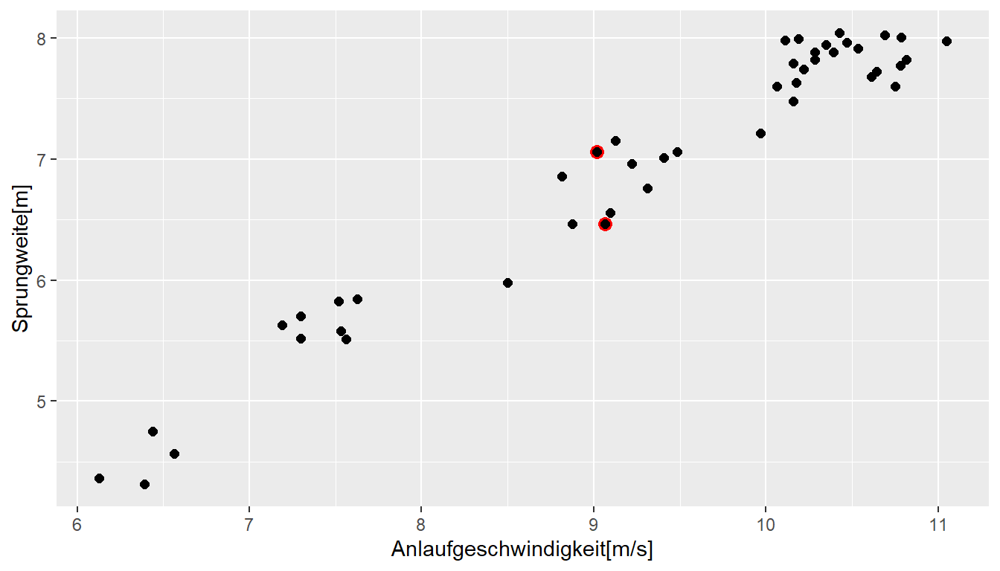
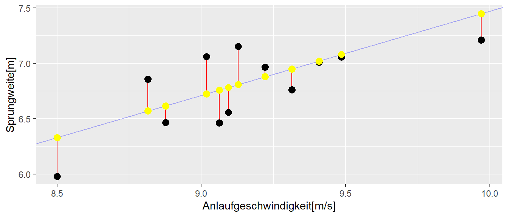
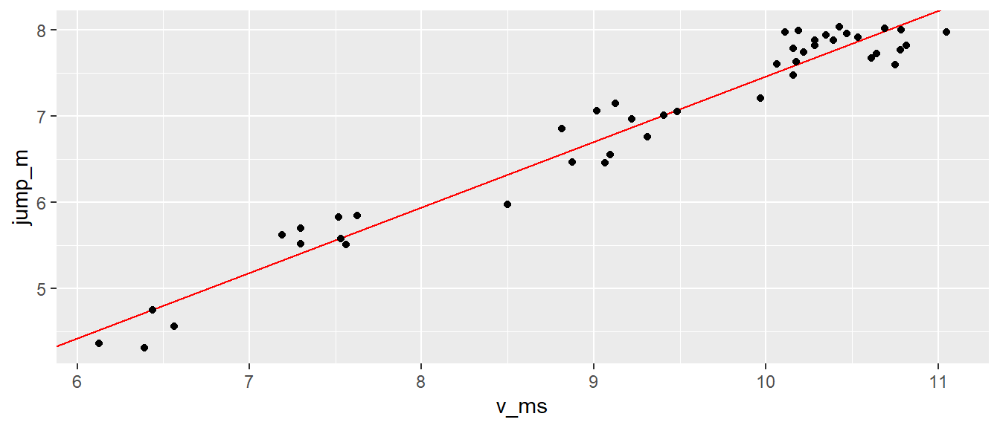

| x | y |
|---|---|
| 0 | 3 |
| 1 | 5 |
| 2 | 7 |
| 3 | 9 |
| 4 | 11 |
| 5 | 13 |
5 Einführung
5.1 Back to school
Wir beginnen mit ein Konzept mit dem wir sehr gut umgehen können. Nämlich der Punkt-Steigungsform aus der Schule (siehe Gleichung 5.1).
\[ y = m x + b \tag{5.1}\]
Wir haben eine abhängige Variable \(y\) und eine lineare Formel \(mx + b\) die den funktionalen Zusammenhang zwischen den Variablen \(y\) und \(x\) beschreibt. Um das Ganze einmal konkret zu machen setzen wir \(m = 2\) und \(b = 3\) fest. Die Formel Gleichung 5.1 wird dann zu:
\[ y = 2 x + 3 \tag{5.2}\]
Um ein paar Werte für \(y\) zu erhalten setzen wir jetzt verschiedene Wert für \(x\) ein indem wir \(x\) in Einserschritten zwischen \([0, \ldots, 5]\) erhöhen. Um die Werte darzustellen verwenden wir zunächst eine Tabelle (vlg. Tabelle 5.1)
Wenig überraschend nimmt \(y\) für den Wert \(x = 0\) den Wert \(3\) an und z.B. für den Wert \(x = 3\) nimmt \(y\) den Wert \(2 \cdot 3 + 3 = 9\) an.
Eine andere Darstellungsform ist naturlich eine graphische Darstellung in dem wir die Werte von \(y\) gegen \(x\) auf einem Graphen abtragen (siehe Abbildung 5.1).

Wiederum wenig überraschen sehen wir einen linearen Zuwachs der \(y\)-Wert mit den größerwerdenden \(x\)-Werte. Da in der Definition der Formel Gleichung 5.2 nirgends festgelegt wurde, dass diese nur für ganzzahlige \(x\)-Werte gilt, haben wir direkt eine Gerade durch die Punkte gelegt. Hier wird auch die Bedeutung von \(m\) und \(b\) direkt klar. Die Variable \(m\) bestimmt die Steigung der Gleichung während \(b\) den y-Achsenabschnitt beschreibt.
Definition 5.1 (\(y\)-Achsenabschnitt) Der y-Achsenabschnitt ist der Wert den \(y\) einnimmt wenn \(x\) den Wert \(0\) annimmt. Sei \(y\) durch eine lineare Gleichung \(y = mx + b\) definiert, dann wird der y-Achsenabschnitt durch den Wert \(b\) bestimmt.
Die Variable \(m\) dahingehend bestimmt die Steigung der Gerade.
Definition 5.2 (Steigungskoeffizient) Wenn \(y\) durch eine lineare Gleichung \(y = mx + b\) definiert ist, dann bestimmt die Variable \(m\) die Steiung der dazugehörenden Gerade. D.h. wenn sich die Variable \(x\) um einen Einheit vergrößert (verkleinert) wird der Wert von \(y\) um \(m\) Einheiten größer (kleiner). Gilt \(m < 0\) dann umgekehrt.
Diese beiden trivialen Konzepte mit eigenen Definitionen zu versehen erscheint im ersten Moment vielleicht etwas übertrieben. Wie sich allerdings später zeigen wird, sind diese beiden Einsichten immer wieder zentral wenn es um die Interpretation von linearen statistischen Modellen geht.
Soweit so gut. Führen wir direkt ein paar Symbole ein, die uns später noch behilflich sein werden. Sei jetzt die Menge der \(x\)-Werte geben \(x = [0, 1, 2, 3, 4, 5]\). Strenggenommen handelt es sich wieder um ein Tupel, da wir jetzt die Reihenfolge nicht mehr ändern. Wir führen nun einen Index \(i\) ein, um einzelne Werte in dem Tupel über ihre Position zu bestimmen und wir hängen diesen Index \(i\) an \(x\) an. Dann wird aus \(x\), \(x_i\).
| Index \(i\) | \(x\)-Wert |
|---|---|
| 1 | 0 |
| 2 | 1 |
| 3 | 2 |
| 4 | 3 |
| 5 | 4 |
| 6 | 5 |
Damit können wir jetzt einen speziellen Wert zum Beispiel den dritten Wert mit \(x_3 = 2\) bestimmen. Wenden wir unseren Index auf unsere Gleichung 5.1 an, folgt daraus, dass \(y\) jetzt auch einen Index \(i\) erhält.
\[ y_i = m x_i + b \qquad i \text{ in } [1,2,3,4,5,6] \]
Wir bezeichnen die beiden Variablen \(m\), die Steigung, und \(b\), den y-Achsenabschnitt, jetzt auch mit neuen Variablen die auch noch einen Index erhalten. Aus \(m\) wird \(\beta_1\) und aus \(b\) wird \(\beta_0\). Damit wird der y-Achsenabschnitt mit \(\beta_0\) bezeichnet und die Steigung wird mit \(\beta_1\) bezeichnet. Dann wir aus unserer Gleichung:
\[ y_i = \beta_0 + \beta_1 x_i \tag{5.3}\]
Das ist immer noch unsere einfache Punkt-Steigungsform, wir haben lediglich den Index \(i\) eingeführt um unterschiedliche \(y-x\)-Wertepaare zu bezeichnen und wir haben den \(y\)-Achsenabschnitt und die Steigung mit neuen Symbolen versehen.
Bei dem bisherigen Zusammenhang handelt es sich um einen funktionalen Zusammenhang zwischen den beiden Variablen \(x\) und \(y\). Funktional deswegen, weil wir eine definiertes mathematisches Modell angeben können, d.h. wir haben eine mathematische Funktion welche die Beziehung zwischen den beiden Variablen beschreibt. Wenn wir den Wert für \(x\) kenne, dann können wir den präzisen Wert für \(y\) ausreichen, indem wir ihn in Gleichung 5.1 einsetzen. Aus der Schule kennen wir auch noch die Darstellung \(y = f(x)\). Streng genommen ist diese Darstellung für Gleichung 5.1 nicht ausreichend, denn um den Wert für \(y\) auszurechnen benötigen wir auch noch Kenntnis über die Werte \(m\) und \(b\), bzw. in unsere weiteren Darstellung \(\beta_0\) und \(\beta_1\). Daher sollte der Zusammenhang eigentlich mit \(y = f(x, \beta_0, \beta_1)\) bezeichnet werden. Es gilt aber immernoch, für gegebene \(x, \beta_0\) und \(\beta_1\) ist der Wert für \(y\) fest determiniert.
Wenn wir mit realen Daten arbeiten, dann funktioniert dieser Ansatz leider nicht ganz. Selbst wenn wir ein Experiment gleich durchführen werden wir immer etwas unterschiedliche Werte im Sinne der Messungenauigkeit messen. Wenn wir biologische Systeme messen, kommt dazu das diese in den seltensten Fällen zeitstabil sind sondern immer bestimmte Veränderungen von einem Zeitpunkt zum nächsten auftauchen. In Abbildung 5.2 sind Sprungweiten von mehreren Weitspringerinnen gegen die Anlaufgeschwindigkeit abgetragen. Bei der Betrachtung der Daten erscheint ein linearer Zusammenhang zwischen diesen beiden Variablen durchaus als plausibel.

In Abbildung 5.2 sind zwei Punkte rot markiert. Die beiden Werte haben praktisch die gleichen \(x\)-Werte allerdings unterscheiden sich die \(y\)-Werte deutlich von einander. Und dies sind nicht die einzigen Beispielpaare bei denen die \(x\)-Werte nahe beiandern liegen, während die \(y\)-Werte deutlich weiter voneiander entfernt liegen als bei einen funktionalen Zusammenhang nach Gleichung 5.1 zu erwarten wäre. Diese Abweichungen kommen durch zufällige Einflussfaktoren wie eben zum Beispiel die Veränderungen angesprochener biologischer Faktoren, Messunsicherheiten, beim Weitsprung draußen sind auch immer externe Einflüsse mögliche, vielleicht wenn es sich um den gleichen Springer handelt, hat er auch beim zweiten Mal keine Lust mehr gehabt. Wenn die Punkte zwei unterschiedliche Springer sind, dann kommt auch dazu, dass zwei Weitspringer bei identischer Anlaufgeschwindigkeit unterschiedliche Sprungfähigkeiten haben oder auch technisch nicht gleich gesprungen sind und so weiter und so fort. Insgesamt führen alle diese Einflüsse dazu, dass wir nicht mehr einen streng funktionalen Zusammenhang zwischen unseren beiden Variablen \(x\) der Anlaufgeschwindigkeit und \(y\) der Sprungweite vorfinden. Wie wir mit diesen Einflüssen umgehen ist das zentrale Thema des nächsten Abschnitts und markiert auch unseren Eingang zur einfachen linearen Regression.
5.2 Die einfache lineare Regression
Bleiben wir bei unserem Beispiel aus Abbildung 5.2 und interpretieren das als praktisches Problem. Wir sind eine Weitsprungtrainerin und stehen jetzt vor der Aufgabe in unserem Training etwas zu verändern um die Weitsprungleistung zu verbessern. Wir haben wir haben uns dazu entschlossen am Anlauf etwas zu verbessern wissen jetzt aber nicht ob, das wirklich lohnenswert ist. Von einer befreundeten Trainerin haben wir einen Datensatz bekommen von Anlaufgeschwindigkeiten und den dazugehörigen Sprungweiten. Schauen wir uns zunächst die einmal die Struktur der Daten an.
| jump_m | v_ms |
|---|---|
| 4.36 | 6.13 |
| 4.31 | 6.39 |
| 4.56 | 6.56 |
| 4.75 | 6.44 |
| 5.52 | 7.30 |
| 5.63 | 7.19 |
| 5.70 | 7.30 |
In Tabelle 5.3 ist ein Ausschnitt Sprungdaten abgebildet. Wir haben eine einfache Struktur der Daten. Wir haben eine Tabelle mit zwei Spalten. jump_m bezeichnet die Sprungweiten und v_ms die Anlaufgeschwindigkeiten. Damit wir die Datenpaare voneinander unterscheiden bzw. identifzieren können führen wir unseren bereits besprochenen Index \(i\) und können so einzelne Paare ansprechen.
| i | jump_m | v_ms |
|---|---|---|
| 1 | 4.36 | 6.13 |
| 2 | 4.31 | 6.39 |
| 3 | 4.56 | 6.56 |
| 4 | 4.75 | 6.44 |
| 5 | 5.52 | 7.30 |
| 6 | 5.63 | 7.19 |
| 7 | 5.70 | 7.30 |
Das waren bisher aber nur Formalitäten. Wir wollen jetzt denn Zusammenhang zwischen den beiden Variablen modellieren. Wir könnten wahrscheinlich auch einfach Pi-mal-Daumen abschätzen wie groß der Zusammenhang ist. Wenn wir jetzt aber einen unserer Läufer haben, der z.B. etwa \(9m/s\) anläuft, welchen Vergleichswerte nehmen wir dann aus Abbildung 5.2. Den unteren oder den oberen der beiden roten Werte? Oder vielleicht den Mittelwert? Welchen Wert nehmen wir wenn unserer Athlete \(9.7m/s\) anläuft. Da haben wir leider keinen Vergleichswert in unserer Tabelle. Daher wäre es schon ganz praktisch eine Formel nach dem Muster von Gleichung 5.3 zu haben. Wie wir allerdings schon festgestellt haben, geht dies nicht so einfach da wir eben das Problem mit den Einflussfaktoren haben, die dazu führen, dass die Werte eben nicht streng auf eine Gerade liegen. Somit liegt die Herausforderung nun eine Gerade zu finden die möglichst genau die Daten wiederspiegelt.
In Abbildung 5.3 sind die Daten zusammen mit verschiedenen möglichen Geraden abgebildet. Eine kurze Überlegung macht schnell klar, dass es im Prinzip unendlich viele unterschiedliche Geraden gibt die durch die Datenpunkte gelegt werden können. D.h. es gibt unendlich viele Kombinationen von \(\beta_0\) und \(\beta_1\), die die jeweiligen Geraden bezeichnen. Daher muss jetzt eine Kriterium gefunden werden, welches ermöglicht aus diesen unendlich vielen Geraden eine auszuwählen die im Sinne des Kriterium optimal ist.
Tatsächlich gibt es dort auch verschiedene Möglichkeiten Kriterien anzuwenden, dasjenige dass jedoch am weitesten verbreitet ist aus verschiedenen Gründen sind die quadratierten Abweichungen von der Gerade. Schauen wir uns die Herleitung dazu schrittweise an. In Abbildung 5.4 ist zur Übersicht nur ein Ausschnitt der Daten zusammen mit einer möglichen Gerade eingezeichnet. Die senkrechten Abweichungen der Geraden zu den jeweiligen Datenpunkten sind rot eingezeichnet. Es ist ersichtlich, dass für diese Wahl der Geraden es zwei Punkte gibt die tatsächlich auch ziemlich genau auf der Geraden liegen während die anderen Punkte zum Teil oberhalb bzw. unterhalb der Geraden liegen. Das Kriterium wäre jetzt dementsprechen die jenige Geraden aus den unendlich vielen zu finden, bei der diese Abweichung ein Minimum annehmen.
\[ \text{min}\sum_{i=1}^n y_i - (\beta_0 + \beta_1 x_i) = \sum_{i=1}^n y_i - \beta_0 - \beta_1 x_i \]

Unglücklicherweise haben die einfachen Abweichungen die unhandliche Eigenschaft, dass dann die Gerade \(y_i = \hat{y}\) optimal ist.
\[ \sum_{i=1}^n y_i - \hat{y} = \sum_i^n y_i - \sum_{i=1}^n \hat{y} = \sum_{i=1}^n y_i - n\hat{y} = \sum_{i=1}^n y_i - n\frac{1}{n}\sum_{i=1}^n y_i = \sum_{i=1}^n y_i - \sum_{i=1}^n y_i= 0 \]
Wir können das Kriterium aber auch noch etwas schärfer machen. Wenn wir sagen, dass wir größere Abweichungen stärker gewichten wollen als kleinere Abweichungen. D.h. große Abweichungen zwischen der Gerade und den Datenpunkten sollten stärker berücksichtigt werden, als kleine Abweichungen. Dies können wir erreichen indem wir die Abweichungen noch zusätzlich quadrieren. Dies hat auch noch den Vorteil noch verschiedene andere mathematische Vorteile, unter anderem führt dies dazu, dass wir eine Gerade erhalten, die auch tatsächlich die Steigung der Punkte berücksichtigt und nicht einfache nur eine horizontale Gerade durch die Punkte zeichnet. Dementsprechend erhalten wir die folgende Funktion, die es zu minimieren gilt:
\[ \text{min} \sum_{i=1}^n(y_i - (\beta_0 + \beta_1 x_i))^2 \tag{5.4}\]
Die Abweichungen zwischen der zu findenden Gerade und den Datenpunkten werden als Residuen \(e_i\) bezeichnet. Dementsprechend ist die Minimierungsgleichung auch als:
\[ \text{min} \sum_{i=1}^n e_i^2 \] darzustellen, mit \(e_i := y_i - (\beta_0 + \beta_1 x_i)\). Führen wir noch eine weitere Bezeichnung \(E\) ein, mit der wir die Minimierungsfunktion bezeichnen (\(E\) nach englisch error).
\[ E = \sum_{i=1}^n e_i^2 = \sum_{i=1}^n (y_i - \beta_0 - \beta_1 x_i)^2 \]
Das Minimum läßt sich finden, indem die partiellen Ableitungen von \(E\) nach \(\beta_0\) und \(\beta_1\) berechnet werden und, wie wir es aus der Schule kennen, die Ableitungen gleich Null gesetzt werden.
\[\begin{align*} \frac{\partial E}{\partial \beta_0} &= -2 \sum_{i=1}^n (y_i - \beta_0 - \beta_1 x_i) = 0 \\ \frac{\partial E}{\partial \beta_1} &= -2 \sum_{i=1}^n x_i (y_i - \beta_0 - \beta_1 x_i) = 0 \end{align*}\]
Diese Gleichungen lassen sich umstellen und nach \(\beta_0\) und \(\beta_1\) auflösen:
\[\begin{align} \hat{\beta_1} &= \frac{\sum_{i=1}^n (x_i - \bar{x})(y_i - \bar{y})}{\sum_{i=1}^n (x_i - \bar{x})^2} \\ \hat{\beta_0} &= \bar{y} - \hat{\beta_1} \bar{x} \label{eq-slm-basics-norm1} \end{align}\]
\(\bar{x}\) und \(\bar{y}\) sind wieder die Mittelwerte von \(x_i\) und \(y_i\). Diese beiden Gleichungen werden als die Normalengleichungen bezeichnet.
Wir führen noch einen weiteren Term ein, den vorhergesagten Wert \(\hat{y}_i\) von \(y_i\) anhand der Geradengleichung. Das Hütchen über \(y_i\) ist dabei immer das Signal dafür, das es sich um einen abgeschätzten Wert handelt. Wenn wir \(\beta_0\) und \(\beta_1\) anhand der Normalengleichung bestimmen, dann sind das mit großer Wahrscheinlichkeit nicht die wahren Werte aus der Population, sondern wir haben sie nur anhand der Daten abgeschätzt. Daher bekommen die berechneten Werte ebenfalls ein Hütchen \(\hat{\beta}_0\) und \(\hat{\beta}_1\). Insgesamt nimmt die lineare Geradengleichung dann die folgende Form an:
\[ \hat{y}_i = \hat{\beta}_0 + \hat{\beta}_1 \cdot x_i \]
Graphisch sind die \(\hat{y}_i\)s die Werte auf der Geraden für die gegebenen \(x_i\)-Werte.

Für den vorliegenden Fall der Weitsprungdaten erhalten wir die Werte für die Koeffizienten nach Einsetzen der beobachteten Werte in ?eq-slm-basics-norm1 mit \(\hat{\beta}_0 = -0.14\) und \(\hat{\beta}_1 = 0.76\). Somit folgt für die Geradengleichung:
\[ \hat{y}_i = -0.14 + 0.76 \cdot x_i \]
Wir erhalten die graphische Darstellung der Geradengleichung indem die \(x_i\)-Werte eingesetzt werden und eine Gerade durch die Punkte gezogen wird. Oder auch einfacher für den größten und den kleinsten \(x_i\)-Wert.
Um uns auch zu vergewissern, dass unsere Berechnungen korrekt sind, schauen wir uns noch einmal an, wie sich \(E\) verhält, wenn wir unterschiedliche Kombinationen von Werten für \(\beta_0\) und \(\beta_1\) in die lineare Gleichung einsetzen.

In Abbildung 5.7 sind verschiedene Werte für \(E\) in Form einer heatmap dargestellt. Die Abweichungen wurden \(log\)-transformiert (d.h. der Logarithmus der \(E\)-Werte wurde berechnet), da sonst die Unterschiede in der diagnaolen Bildrichtung zu schnell wachsen und die Unterschiede nicht mehr so einfach zu erkennen sind. Werte näher an Weiß bedeuten kleine Werte und Werte näher an Rot bedeuten größere Werte von \(E\). Das berechnete Paar für \((\hat{\beta}_0, \hat{\beta}_1)\) mit \(\hat{\beta}_0 = -0.14\) und \(\hat{\beta}_1 = 0.76\) ist schwarz eingezeichnet. Die Abbildung zeigt, dass dieses Wertepaar tatsächlich ein Minimum bezüglich der Funktion \(E\) ist, da in alle Richtung weg von dem schwarzen Punkt die Werte für \(E\) zunehmen. Da wir nur einen Ausschnitt der möglichen Werte sehen, handelt es sich zunächst um eine lokales Minimum aber es lässt sich zeigen, dass es sich dabei auch um ein globales Minimum handelt. Diese Eigenschaft hängt mit der Form der Funktion \(E\) zusammen. In Tabelle 5.5 sind beispielhaft ein paar Werte für \(log(E)\) für Paare von \(\beta_0\) und \(\beta_1\) angezeigt, die in Abbildung 5.7 gelb eingezeichnet sind.
| \(\beta_0\) | \(\beta_1\) | \(log(E)\) |
|---|---|---|
| -0.48 | 0.67 | 70.34 |
| -0.44 | 0.68 | 51.85 |
| -0.38 | 0.72 | 22.04 |
| -0.30 | 0.75 | 6.46 |
| -0.22 | 0.75 | 3.77 |
| -0.14 | 0.76 | 2.41 |
5.2.1 Schritt-für-Schritt Herleitung der Normalengleichungen
Um die Herleitung der Normalengleichungen Schritt-für-Schritt nachvollziehen zu können benötigen wir zunächst einmal ein paar algebraische Tricks.
Für den Mittelwert gilt: \[ \bar{x} = \frac{1}{n}\sum x_i \Leftrightarrow \sum x_i = n \bar{x} \]
Bei Summen und konstanten \(a\) konstant gilt: \[\begin{align} \sum a &= n a \\ \sum a x_i &= a \sum x_i \\ \sum (x_i + y_i) &= \sum x_i + \sum y_i \end{align}\]
Wenn eine Summe abgeleitet wird, kann in die Ableitung in die Summe reingezogen werden. \[ \frac{d}{d x}\sum f(x) = \sum\frac{d}{d x} f(x) \]
Hier ein zwei Umformungen bei Summen und dem Kreuzprodukt bzw. dem Quadrat. \[\begin{alignat}{2} && \sum(x_i-\bar{x})(y_i-\bar{y}) \\ \Leftrightarrow\mkern40mu && \sum (x_iy_i-\bar{x}y_i-x_i\bar{y}+\bar{x}\bar{y}) \nonumber \\ \Leftrightarrow\mkern40mu && \sum x_i y_i - \sum\bar{x}y_i - \sum x_i \bar{y} + \sum \bar{x} \bar{y} \nonumber \\ \Leftrightarrow\mkern40mu&& \sum x_iy_i - n\bar{x}\bar{y}-n\bar{x}\bar{y}+n\bar{x}\bar{y} \nonumber \\ \Leftrightarrow\mkern40mu && \sum x_iy_i - n\bar{x}\bar{y} \nonumber \end{alignat}\] \[\begin{alignat}{2} && \sum(x_i - \bar{x})^2 \\ \Leftrightarrow\mkern40mu && \sum(x_i^2 - 2 x_i \bar{x} + \bar{x}^2) \nonumber \\ \Leftrightarrow\mkern40mu && \sum x_i^2 - 2\bar{x}\sum x_i + \sum\bar{x}^2 \nonumber\\ \Leftrightarrow\mkern40mu && \sum x_i^2 - 2\bar{x}n\bar{x} + n\bar{x}^2 \nonumber \\ \Leftrightarrow\mkern40mu && \sum x_i^2 - n \bar{x}^2 \nonumber \end{alignat}\]Zurück zu unserem Problem. Es gilt \(E\) zu minimieren:
\[\begin{alignat}{2} && E = \sum e_i^2 = \sum (y_i - \hat{y}_i)^2 \\ \Leftrightarrow\mkern40mu && \sum (y_i - (\beta_0 + \beta_1 x_i))^2 \nonumber \\ \Leftrightarrow\mkern40mu && \sum (y_i - \beta_0 - \beta_1 x_i)^2 \nonumber \end{alignat}\]
Die Gleichung hängt von zwei Variablen \(\beta_0\) und \(\beta_1\). Um das Minimum der Gleichung zu erhalten, verfährt man wie in der Schule, indem man die Ableitung gleich Null setzt. Der vorliegenden Fall ist jedoch etwas komplizierter, da die Gleichung von zwei Variablen abhängt. Daher müssen wir die partiellen Ableitungen \(\frac{\partial}{\partial \beta_0}\) und \(\frac{\partial}{\partial \beta_1}\) verwendet. Wir erhalten dadurch ein Gleichungssystem mit zwei Gleichungen (die jeweiligen Ableitungen) in zwei Unbekannten (\(\beta_0\) und \(\beta_1\)). Die Lösung erfolgt, indem zuerst eine Gleichung nach der einen Unbekannten umgestellt wird und das Ergebnis dann in die andere Gleichung eingesetzt wird.
Wir beginnen mit der partiellen Ableitung nach \(\beta_0\) für den y-Achsenabschnitt. (Zurück an die Schule erinnern: Äußere Ableitung mal innere Ableitung)
\[\begin{alignat}{2} && \frac{\partial \sum (y_i - \beta_0 - \beta_1 x_i)^2}{\partial \beta_0} \\ \Leftrightarrow\mkern40mu && \sum\frac{\partial}{\partial \beta_0}(y_i - \beta_0- \beta_1 x_i)^2 \nonumber \\ \Leftrightarrow\mkern40mu && \sum 2(y_i - \beta_0- \beta_1 x_i) (-1) \nonumber \\ \Leftrightarrow\mkern40mu && -2 \sum (y_i - \beta_0- \beta_1 x_i) \nonumber \end{alignat}\] Zum minimieren gleich Null setzen. \[\begin{alignat}{2} && -2 \sum (y_i - \beta_0- \beta_1 x_i) = 0 \nonumber \\ \Leftrightarrow\mkern40mu && \sum (y_i - \beta_0- \beta_1 x_i) = 0 \nonumber \\ \Leftrightarrow\mkern40mu && \sum y_i - \sum \beta_0- \sum \beta_1 x_i = 0 \nonumber \\ \Leftrightarrow\mkern40mu && n \bar{y} - n \beta_0- \beta_1 n \bar{x} = 0 \nonumber \\ \Leftrightarrow\mkern40mu && \bar{y} - \beta_0- \beta_1 \bar{x} = 0 \nonumber \\ \Leftrightarrow\mkern40mu && \bar{y} - \beta_1 \bar{x} = \beta_0\nonumber \\ \Leftrightarrow\mkern40mu && \beta_0= \bar{y} - \beta_1 \bar{x} \end{alignat}\]
Es folgt nach dem gleichen Prinzip die Herleitung für die Steigung \(\beta_1\) und indem die Lösung für \(\beta_0\) eingesetzt wird.
\[\begin{alignat}{2} && \frac{\partial \sum (y_i - \beta_0 - \beta_1x_i)^2}{\partial \beta_1} \\ \Leftrightarrow\mkern40mu && \sum\frac{\partial}{\partial b}(y_i - \beta_0 - \beta_1x_i)^2 \nonumber \\ \Leftrightarrow\mkern40mu && \sum2(y_i - \beta_0 - \beta_1x_i) -x_i \nonumber \\ \Leftrightarrow\mkern40mu && -2 \sum(y_i - \beta_0 - \beta_1x_i)x_i \end{alignat}\] Wiederum gleich Null setzen. \[\begin{alignat}{2} && -2 \sum(y_i - \beta_0 - \beta_1x_i)x_i = 0 \nonumber\\ \Leftrightarrow\mkern40mu && \sum (y_i - \beta_0 - \beta_1x_i)x_i = 0 \nonumber \\ \Leftrightarrow\mkern40mu && \sum (y_i x_i - \beta_0 x_i - \beta_1x_i x_i) = 0 \nonumber \\ \Leftrightarrow\mkern40mu && \sum y_i x_i - \beta_0 \sum x_i - b\sum x_i^2 = 0 \nonumber \\ \Leftrightarrow\mkern40mu && \sum y_i x_i - n \beta_0 \bar{x} - \beta_1\sum x_i^2 = 0 \nonumber \end{alignat}\] Einsetzen der Lösung für \(\beta_0\) führt zu: \[\begin{alignat}{2} \Leftrightarrow\mkern40mu && \sum y_i x_i - n (\bar{y} - \beta_1 \bar{x}) \bar{x} - \beta_1\sum x_i^2 = 0 \nonumber \\ \Leftrightarrow\mkern40mu && \sum y_i x_i - n\bar{y}\bar{x} + n \beta_1\bar{x}^2 - \beta_1\sum x_i^2 = 0 \nonumber \\ \Leftrightarrow\mkern40mu && \sum y_i x_i - n\bar{y}\bar{x} = \beta_1 \sum x_i^2 - \beta_1n \bar{x}^2 \nonumber \\ \Leftrightarrow\mkern40mu && \sum (x_i-\bar{x})(y_i-\bar{y}) = \beta_1 (\sum x_i^2 - n\bar{x}^2) \nonumber \\ \Leftrightarrow\mkern40mu && \frac{\sum (x_i-\bar{x})(y_i-\bar{y})}{\sum x_i^2 - n\bar{x}^2} = \beta_1\nonumber \\ \Leftrightarrow\mkern40mu && \beta_1= \frac{\sum (x_i-\bar{x})(y_i-\bar{y})}{\sum(x_i-\bar{x})^2} \nonumber \end{alignat}\]
Somit erhält man die beiden Normalengleichungen der Regression.
Über diese beiden Gleichungen erhalten wir die gewünschten Koeffizienten \(\hat{\beta_0}\) und \(\hat{\beta_1}\). Die Methode wird als die als die Methode der kleinsten Quadrate bezeichnet oder im Englischen Root-Mean-Square (RMS).
5.3 Was bedeuten die Koeffizienten?
Gehen wir zurück nun zu unseren Ausgangsproblem der Weitspringer, was haben wir jetzt durch die Berechnung der Gerade eigentlich gewonnen? Dazu müssen wir erst einmal verstehen was die beiden Koeffizienten \(\hat{\beta}_0\) und \(\hat{\beta}_1\) bedeuten. Wenn wir zurück zu Gleichung 5.1 gehen, haben die beiden Koeffzienten den \(y\)-Achsenabschnitt und die Steigung der Geraden beschrieben. In unserem Beispiel haben wir anhand der Daten einen \(y\)-Achsenabschnitt \(\hat{\beta}_0\) von \(-0.14\) berechnet. D.h ein Weitspringer der mit einer Anlaufgeschwindigkeit von \(x = 0\) anläuft, landet \(14\)cm hinter der Sprunglinie. Dies macht offensichtlich nicht viel Sinn (warum?). Der Grund warum hier ein offensichtlich unrealistischere Wert berechnet wurde, werden wir später noch genauer betrachten. Wir können trotzdem zwei Eigenschaften von \(\hat{\beta}_0\) beobachten. 1) der Koeffizient hat eine Einheit, nämlich die gleiche Einheit wie die Variable \(y\). 2) Ob der Wert zu interpretieren ist, hängt von der Verteilung der Daten ab. Schauen wir uns nun den Steigungskoeffizienten \(\hat{\beta}_0\) an. Der Steigungskoeffizient in Gleichung 5.1 zeigt an, wie sich der \(y\)-Wert verändert, wenn sich der \(x\)-Wert um einen Einheit verändert. In unserem Fall welcher Unterschied zu erwarten ist zwischen zwei Weitspringern die sich in der Anlaufgeschwindigkeit um eine \(m/s\) unterscheiden. D.h. der Steigungskoeffizient ist ebenfalls in der Einheit der \(y\)-Variable zu interpretieren.
Unsere Trainerin kann jetzt die berechnete Gerade dazu nehmen um zu überprüfen ob es sich lohnen würde Trainingszeit in den Anlauf zu stecken und welche Verbesserung dort zu erwarten sind. Allerdings fehlt dazu noch etwas, wir wissen nämlich noch nicht ob die berechnete Gerade auch wirklich die Daten gut wiederspiegelt. Im Beispiel erscheint dies anhand der Grafik als relativ plausibel. Das muss aber nicht immer so sein. Wir können nämlich für alle möglichen Daten eine Gerade berechnen ohne das diese Gerade die Daten wirklich auch nur annährend korrekt wiedergibt. In ?eq-slm-basics-norm1 steht nirgends für welche Daten die Berechnung nur erlaubt ist.
In Abbildung 5.8 sind synthetische Daten der Funktion \(f(x) = x^3\) abgebildet und die mittels ?eq-slm-basics-norm1 berechneten Gerade eingezeichnet. Die Gerade ist zwar in der Lage die ansteigenden Werte zu modellieren aber eben nicht Schwingungen die durch die kubische Abhängigkeit zustande kommen. Aber, nichts verhindert die Anwendung der Formel auf die Daten.
Der gleiche Effekt ist auch in Abbildung 5.9 wieder zu beobachten. Hier besteht eine sinusförmige Abhängigkeit zwischen \(y\) und \(x\). Wir können wieder ?eq-slm-basics-norm1 anwenden und erhalten auch ein Ergebnis für \(\hat{\beta}_0\) und \(\hat{\beta}_1\). Allerdings repräsentiert die Gerade in keinster Weise den tatsächlichen Zusammenhang zwischen den Daten.
Im nächsten Kapitel werden wir uns daher damit beschäftigen die Repräsentation der Daten näher zu betrachten und zu präzisieren.
Wir nehmen noch eine weitere Eigenschaft der Gerade mit, die zunächst nichts mit der Interpretation der Koeffizienten zu tun hat, aber später noch mal von Interesse sein wird. Die Gerade hat nämlich die Eigenschaft durch den Punkt (\(\bar{x}\), \(\bar{y}\)) zu gehen. Dies kann daran gesehen werden wenn in die Gleichung \(\bar{x}\) für \(x_i\) eingesetzt wird. Anhand der Normalgleichungen kann die Geradengleichung in der Form.
\[ y_i = \hat{\beta}_0 + \hat{\beta}_1 \cdot x_i = \underbrace{\bar{y} - \hat{\beta}_1 \bar{x}}_{\text{Def. }\hat{\beta}_0} + \hat{\beta}_1 \cdot x_i \]
Wird jetzt für \(x_i\) der Wert \(\bar{x}\) eingesetzt folgt daher.
\[ y_i = \bar{y} - \hat{\beta}_1 \bar{x} + \hat{\beta}_1 \bar{x} = \bar{y} \]
D.h. für den Wert \(\bar{x}\) nimmt die Geradengleichung der Wert \(\bar{y}\) an. Für die Sprungdaten ist die auch noch mal in Abbildung 5.10 graphisch dargestellt.

Eine Eigenschaft die im weiteren Verständnis immer wieder auftaucht bezieht sich auf die \(x\)-Werte. Bei der Regression wird im Allgemeinen davon ausgegangen, dass die beobachteten \(x\)-Werte fixiert sind. D.h. trotzdem die \(x\)-Werte bei einem Experiment zufällig sein können, werden diese in den nachfolgenden Schritten als fixiert angesehen. Daher ist in der Formel \(Y_i = \beta_0 + \beta_1 X_i + \epsilon_i\) auch nur \(\epsilon_i\) die einzige zufällige Variable.
5.4 Die einfache Regression in R
In R wird eine Regression mit der Funktion lm() berechnet. Die für uns zunächst wichtigsten Parameter von lm() sind der erste Parameter formula und der zweite Parameter data. Mit der Formel wird der Zusammenhang zwischen den Variablen beschrieben, dabei können die Namen bzw. Bezeichner aus dem tibble() benutzt werden, die an den zweiten Parameter data übergeben werden. D.h. die Spaltennamen aus dem tibble() werden in formula verwendet.
In unserem Weitsprungbeispiel konnten wir in Tabelle 5.3 sehen, das das tibble() zwei Spalten mit den Namen v_ms, den Anlaufgeschwindigkeiten, und jump_m, den Weitsprungweiten enthielt. Dementsprechend, müssen wir diese beiden Bezeichner in formula verwenden, um unser Regressionsmodell zu beschreiben. Die Form der Modellbeschreibung folgt, dabei einer bestimmten Syntax die wir uns zunächst anschauen müssen. Zentrales Element der Syntax ist das Tilde Zeichen ~ (Win: ALTGR++, MacOS: ___), welches interpretiert wird als modelliert mit. Der Term der auf der linken Seite steht bezeichnet die abhängige Variable während die Terme auf der rechten Seite der Tilde stehen die unabhängige Variablen spezifizieren. Dementsprechend kann der Satz “Y wird mittels X modelliert” in die Formelsyntax mit Y ~ X übersetzt. Die komplette Syntax orientiert sich an eine Arbeit von Wilkinson und Rogers (1973).
Wenn ein konstanter in der Syntax benötigt wird, dann wird dieser mit einer \(1\) bezeichnet. Also zum Beispiel wenn wir Gleichung 5.3 modellieren wollen benutzen wir die Syntax y ~ 1 + x. Die beiden Koeffizienten \(\beta_0\) und \(\beta_1\) brauchen wir nicht explizit anzugeben, sondern R generiert uns automatisch anhand der Bezeichner Koeffizienten, die allerdings die Namen der Bezeichner bekommen. Dazu kommt noch eine Besonderheit, dass R bei einer Regressionsgleichung automatisch davon ausgeht, dass ein konstanter Term verwendet werden soll, d.h. der Term +1 wird automatisch dazugefüht. Wenn wir ein Modell ohne einen \(y\)-Achsenabschnitt fitten wollen, dann müssen wir dies R explizit mitteilen, indem wir -1 der linken Seite hinzufügen, also z.B. y ~ x - 1. Die Syntax generalisiert dann später einfach, wenn zusätzliche Terme in der multiplen Regression benötigt werden, in dem weitere unabhängige Variablen durch + dazugefügt werden. Dementsprechend würde sich die Formel y ~ x_1 + x_1 übersetzen in die abhängige Variable \(y\) wird mittels der unabhängigen Variablen x_1 und x_2 und einem konstaten Term modelliert. In Tabelle 5.6 sind weitere Beispiele für die Struktur der Formelsyntax für lm() gezeigt.
| Modell | Formel | Erklärung |
|---|---|---|
| \(y=\beta_0\) | y ~ 1 |
y-Ab |
| \(y=\beta_0+\beta x\) | y ~ x |
y-Ab und StKoef |
| \(y=\beta_0+\beta_1x_1+\beta_2x_2\) | y ~ x1 + x2 |
y-Ab und 2 StKoe |
Wenn wir jetzt also unsere Weitsprungdaten modellieren wollen, verwenden wir die folgenden Befehle.
lm(jump_m ~ v_ms, data = jump)
Call:
lm(formula = jump_m ~ v_ms, data = jump)
Coefficients:
(Intercept) v_ms
-0.1385 0.7611 Per default ist das Ergebnis von lm() nicht wirklich besonders hilfreich und es werden nur die beiden berechneten Koeffizienten ausgegeben. Dabei bezeichnet der Term (Intercept) den automatisch dazugefügten konstanten Term in der Formel, sprich den \(y\)-Achsenabschnitt \(\hat{\beta}_0\) und mit v_ms den Steigungskoeffizienten \(\hat{\beta}_1\). Um aus lm() mehr Informationen heraus zu bekommen, ist es sinnvoll das Ergebnis einen Variable zuzuweisen. In dem vorliegenden Arbeit wird dazu in den meisten Fällen eine Variante des Bezeichners mod benutzt, als Kurzform vom model. Diese Bezeichnung ist aber wie alle Bezeichner in R vollkommen willkürlich und entspringt nur der Tippfaulheit des Autors.
mod <- lm(jump_m ~ v_ms, data = jump)Um jetzt mehr Informationen aus dem gefitteten lm()-Objekt zu bekommen werden Helferfunktion verwendet. Die wichtigste Funktion ist die summary()-Funktion (?summary.lm).
summary(mod)
Call:
lm(formula = jump_m ~ v_ms, data = jump)
Residuals:
Min 1Q Median 3Q Max
-0.44314 -0.22564 0.02678 0.19638 0.42148
Coefficients:
Estimate Std. Error t value Pr(>|t|)
(Intercept) -0.13854 0.23261 -0.596 0.555
v_ms 0.76110 0.02479 30.702 <2e-16 ***
---
Signif. codes: 0 '***' 0.001 '**' 0.01 '*' 0.05 '.' 0.1 ' ' 1
Residual standard error: 0.2369 on 43 degrees of freedom
Multiple R-squared: 0.9564, Adjusted R-squared: 0.9554
F-statistic: 942.6 on 1 and 43 DF, p-value: < 2.2e-16Hier bekommen wir schon deutlich mehr Informationen mitgeteilt. Als erstes die Formell die wir lm() übergeben haben. Dann folgt ein Abschnitt über die Residuen, gefolgt von den Koeffzienten und im unteren Abschnitt noch weitere Statistiken. Wir konzentrieren uns zunächst einmal nur auf die Tabelle im Abschnitt Coefficients. Hier begegnen uns wieder in der ersten Spalte die Bezeichner für die beiden \(\beta\)s in Form von \(\beta_0\) (Intercept) und \(\beta_1\) v_ms. In der zweiten Spalte daneben stehen die berechneten Koeffizienten die wir jetzt schon mehrmals gesehen haben. Die weiteren Spalten ignorieren wir hier zunächst. Im Laufe der folgenden Kapitel werden wir uns die weiteren Statistiken anschauen und deren Bedeutung verstehen.
Bei der Benutzung von lm() werden uns noch weitere Helferfunktionen begegnen, die den Umgang mit dem gefitteten Modell vereinfachen. Wollen wir zum Beispiel die beiden Koeffiziente aus dem Modell extrahieren können wir dazu die Funktion coefficients() oder auch nur kurz coef() verwenden. Koeffizienten und Standardschätzfehler
coef(mod)(Intercept) v_ms
-0.1385361 0.7611019 Die Funktion coef() gibt einen Vektor benannten Vektor zurück der entweder über die Bezeichner oder einfach über die Position der Koeffizienten angesprochen werden kann. Möchte ich zum Beispiel den Steigungskoeffizienten verwendent werwende ich:
coef(mod)[1](Intercept)
-0.1385361 oder
coef(mod)['v_ms'] v_ms
0.7611019 Ein etwas übersichtlicher Zugang ist wieder zunächst einmal das Ergebnis von coef() einer Variablen zuweisen und diese dann weiter benutzen.
jump_betas <- coef(mod)
jump_betas[1](Intercept)
-0.1385361 Die Koeffizienten kann ich zum Beispiel benutzen um die Regressionsgerade in ein Streudiagramm hinzuzufügen (Das tibble() mit den Sprungdaten hat den Bezeichner jump). Entweder mit dem ggplot2() Grafiksystem.
ggplot(jump,
aes(x = v_ms, y = jump_m)) +
geom_abline(intercept = jump_betas[1],
slope = jump_betas[2],
color = 'red') +
geom_point()
Oder mit den Standard R-Grafiksystem. Hier kann der Funktion abline() das gefittete lm()-Objekt direkt übergeben werden und die Koeffizienten werden automatisch extrahiert.
plot(jump_m ~ v_ms, data = jump)
abline(mod, color = 'red')
Schauen wir uns noch mal ein ganz einfaches Beispiel, bei dem wir tatsächlich wissen welcher Zusammenhang zwischen den beiden Variablen. Wir halten das Beispiel ganz einfache und nehmen vier verschiedene \(x\)-Werte mit \(x_i = i\). Wir setzen \(\beta_0 = 1\) und \(\beta_1 = 0.5\). Wir generieren die vier Werte mit R, speichern diese in einem tibble() mit dem Bezeichner data und berechnen die resultierenden Koeffizienten mittels lm().
data <- tibble(
x = 1:4,
y = 1 + 0.5 * x
)
mod <- lm(y ~ x, data)
coef(mod)(Intercept) x
1.0 0.5 Und tatsächlich können wir die korrekten Koeffizienten mittels der einfachen linearen Regression wiedergewinnen. Diesen Ansatz mittels synthetisch generierten Daten die eingeführten Konzepte und Ansätze zu überprüfen werden wir im weiteren Verlauf des Skripts immer wieder anwenden, da er die Möglichkeit bietet relativ einfach und nachvollziehbar das Verhalten verschiedener Ansätze auszutesten.
Zusammenfassend lässt sich sagen, das wir jetzt gelernt haben wie wir ein einfaches Regressionmodell der Form Gleichung 5.3 an einen beliebigen Datensatz fitten können. Die Berechnung der beiden Koeffizienten \(\beta_0\) und \(\beta_1\) erfolgt mittels ?eq-slm-basics-norm1. Dabei berechnen wir die Koeffizienten nicht von Hand sondern lassen die von R mittels der lm() durchführen. Die Berechnung ist dabei vollkommen mechanisch und die Koeffizienten per-se sagen nichts darüber aus, ob das lineare Modell die Daten tatsächlich auch widerspiegelt. Dazu müssen wir noch etwas mehr Theorie aufbauen um Aussagen darüber zu treffen ob das Modell adäquat ist. Dies gehen wir in den folgenden Abschnitten und Kapiteln an.